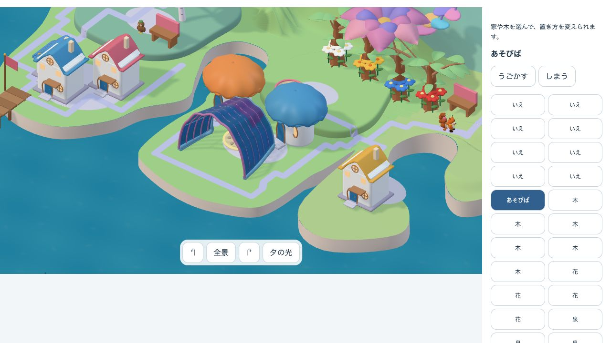
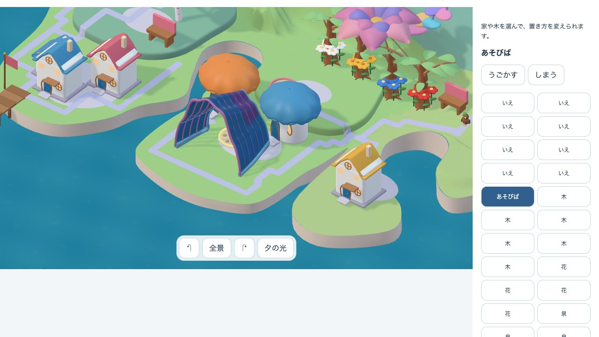
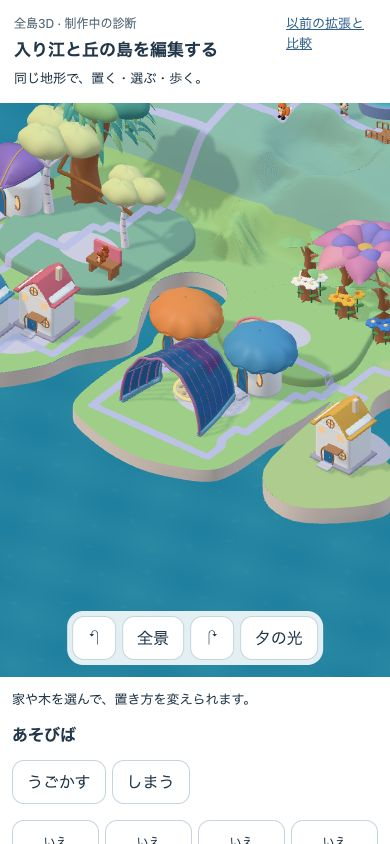
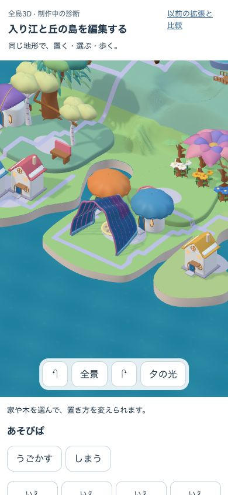

入り江の屋根 · MCPで既存素材を修正
既存の殻の上部だけを持ち上げた1案。同じ32所有物・昼・カメラで、本体のGrowingWorld rendererへ読み込んだDEV診断です。通常の本人の島を変更したものではありません。
工程：通過。美術：採用保留。 天井の高さは読みやすくなりますが、隣の屋根との余白が減ります。小画面での差は控えめです。独立した子どもの評価・実機性能・保存/PWAは未確認です。
変更前 · 近景
変更後 · 近景
全景
390 × 844 · 同じ近景
変更前
変更後
変更前を操作 / 変更後を操作 / 条件・検証記録
cove-mcp-roof-v1 · src/public/採用原本は変更なし。動く住人の位置・自律利用履歴は同期していません。